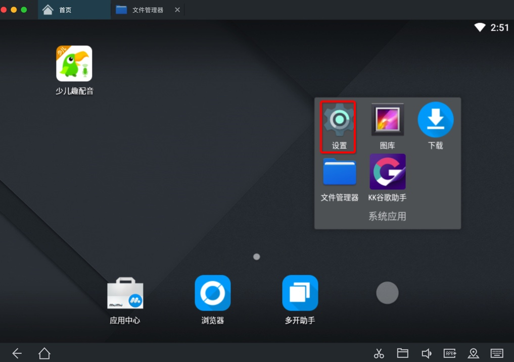

夜神Nox概览
- 背景：
作为安卓相关领域内的工具：安卓模拟器
可以有很多用途，比如：
- 配合破解安卓app
- 单独用来运行游戏
- -> 在（桌面）电脑中打（手机）游戏
市面上很多安卓模拟器：
- 网易Mumu
- 截图
- 
- 要么是：运行微信会闪退崩溃
- 要么是：微信打开小程序会崩溃闪退
- 无法在VirtualXposed中安装和使用JustTrustMe
- 截图
- Andy
- 无法正常安装
- 安装后无法启动
- 无法正常安装
- 天天
- 官网没有mac版
- 网上能找到mac版
- 有的也只是2年前很老的版本
- 而且文件大小也很小，看起来就不太对
- Mac中无法安装
- 而且文件大小也很小，看起来就不太对
- 有的也只是2年前很老的版本
- 网上能找到mac版
- 官网没有mac版
- BlueStacks蓝叠
- Mac版（好像）已停止更新
- 其他
- Genymotion
- Andy
- Official Emulator
- Manymo
- 等


都不够好用。
后来找到个好用的安卓模拟器：
- 夜神Nox
- 是什么：一款安卓模拟器
- 全称：
夜神安卓模拟器Nox App Player
- 资料
- 官网主页
- 中文
- 夜神安卓模拟器-安卓模拟器电脑版下载-官网
- 英文
- Free Android Emulator on PC and Mac - Download NoxPlayer
- 中文
- 官网主页
- 一句话描述
- 电脑玩手游的神兵利器